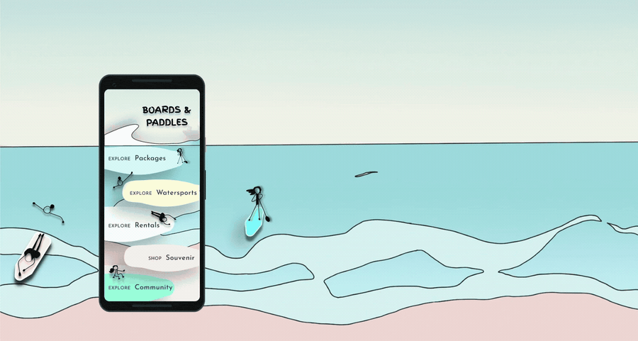

Personal Project · UX Case Study · Figma Practice
Ocean sports fans juggle five channels just to find a package, book gear, and see who else is going.

Discovery happens over phone calls and emailed PDFs, rentals carry no trust signal, and there's nowhere for the community around the sport to actually live. I designed Boards & Paddles end-to-end — interviews, journey mapping, personas, and low-fi wireframes through a working high-fidelity Figma prototype — to explore how a themed, community-first app turns a fragmented hobby into an inviting one.
Personal project · Figma practice, created Jan 2022 — a concept exploration, not a shipped product.
Problems
- Discovery scattered across calls & email
- No visual way to compare packages
- No trust signal on gear rentals
- No home for the community
- Booking buried in back-and-forth
What today looks like
Sue calls the watersports company, then waits on an emailed PDF just to compare packages — a full back-and-forth before she even knows what's available.
Reviews, trainers, and safety guidelines live nowhere a first-timer can browse before committing to a class or a rental.
What I designed
- Curated packages, not a phone treeExplore Packages, Watersports, and Rentals become one themed home screen instead of a call-and-wait cycle.
- Verified gear rentalsRental and class listings carry ratings and reviews up front, so a first-timer can commit with confidence.
- See who's going todayA live status feed — "I'm surfing today" — lets people heading out the same day find each other.
- Community built into the core navCommunity sits alongside Explore and Home — a shared feed for group photos and stories, not bolted on.
- Every booking tracked in one placeMy Activities shows ongoing and completed classes at a glance, instead of scattered emails.
- Booking end-to-endDates, guests, package, and payment in one flow — no back-and-forth to confirm a spot.
What it explored
- Wireframes for the listing-detail and booking flow progressed straight into high-fidelity Figma UI
- The journey map's emotion curve was used to prioritize which screens needed the most friction designed out first


{kind=link}
{kind=link}